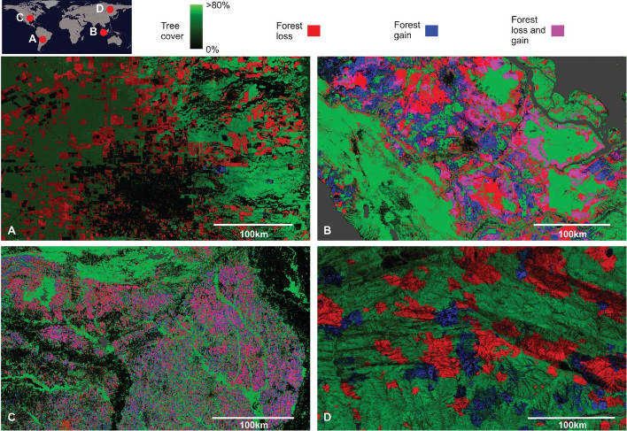
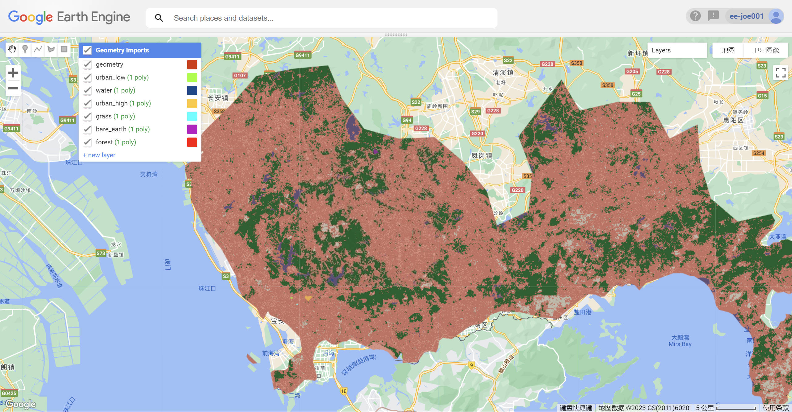
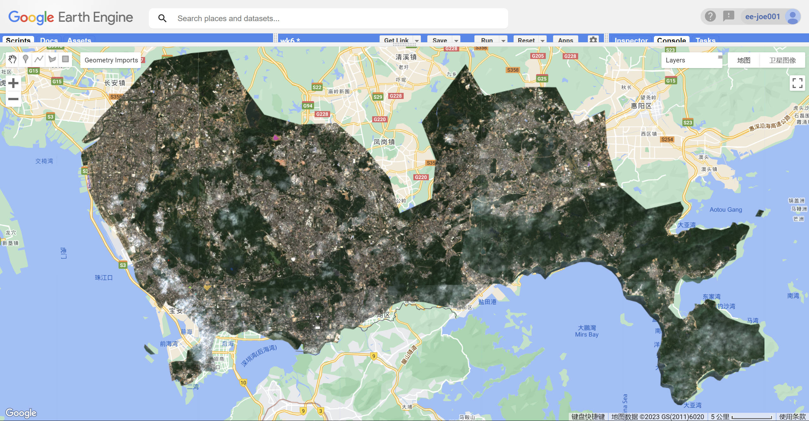

6 Classification I
6.1 Summary
This week’s leture is mainly about some application scenarios of classification and what kind of processes are used during the analysis.Basically, things couldbe done through classifying are as following:
- Urban expansion
Landsat satellite image data could be used to dectect and see what’s changed during a centain period of time in a city, through which we can know what city morphology will be like.
- Air pollution and LULC(land use land cover)
It can be illustrated through charts that how the relationship between air pollution and LULC is and measures couble be implemented based on the results.
- Monitoring illegal logging
A good example is in Brazil, local officers use these steps to find potentiao illegal logging areas:
- Landsat data for monitoring forest loss and illegal logging
- Pre-processing, including(i) image resampling, (ii) conversion of raw digital values (DN) to top of atmosphere (TOA) reflectance, (iii) cloud/shadow/water screening and quality assessment (QA), and (iv) image normalization
- Creating metrics
- Feature space, which means deploying scattergram of two bands
- Training data (in supervised machine learning),methods are like Random Forest, SVM or maxmum likelihood could be used in this step
- Classification (supervised or unsupervised),then generate the result.  Source:Hansen et al. 2013
How we deal with the remote sensing data in the classification? Gnerally speaking, there are two methods, supervised classification and unsupervised classification. Supervised classification is a classification method that requires learning and training. We need to select samples ourselves and learn before classifying; unsupervised classification does not require manual collection of ground object sample point data. Most of them are automatically classified by clustering methods, and we can classify while learning.Typical methods will be introduced in the following:
- Unsupervised classification
- k-means analysis
- cluster bustering with isodata
- Supervised classification
- maximum likelihood
- support vector machines
There are lots of information online, so I am not gonna elaborate these methods in detail. Honestly speaking, although some concepts seem to be deep and abstact, when we use them all we need to do is click some buttons and set proper appropriate parameters in those RS processing software or platform.
Here are CART results used to classfy the Shenzhen city 
there are difficulties in doing this for sure, and the most impressive one is when I got the image after filtering clouds, clip function couldn’t be processed, and it showed “clip function is not defined”, after going through the practical introduction and checking some simliar quetions posted on geek website, I realized that when we clip, we basically refer to one image’s clipping, rather than a set of images. Therefore, I use mean function to get the mean image of Shenzhen, then it was easy to clip using the following code:
var meanImage = waytwo.mean();
var waytwo_clip = meanImage.clip(shenzhen)
Map.addLayer(waytwo_clip, visualization, 'waytwoRGB_clip');
Here is what I got:

6.2 Application
I found one article really interesting which is about forest fire historically evaluating.
Lijun Mao(2022) took the pilot area of Qianjiangyuan National Park and its surrounding 10km buffer zone as the research area, based on the GEE cloud platform, Landsat satellite images and satellite forest fire monitoring data, combined with visual interpretation and spectral index method to quickly extract the burned area, and counted The change law of fire occurrence time, frequency and burned area. He also used the landscape index to describe the spatial pattern of the burned area. The results show that: from 1999 to 2019, there were 19 forest fires in the study area, of which forest fires occurred frequently in spring and winter, respectively accounting for 47.37% and 42.11% of total; in 2013, the average coverage of a single forest fire was the widest (83.54 hm2), and in 2011 the number of forest fires occurred the most (6 times), and the area of the burned area was quite different, while in 2014 and 2019 Only one fire occurred each time; the total burned area in the study area was about 766.55 hm2, showing a trend of first increasing and then decreasing during the study period. The burned area in Qianjiangyuan National Park was only 9.05 hm2 (2011 and 2014 were respectively 9.04 hm2 and 0.01 hm2). This research method is suitable for quickly obtaining fire information at a resolution scale of 30 m with the help of free historical Landsat data, establishing spatially clear historical data files of disaster situations, and evaluating disaster management effectiveness of national parks in a timely and objective manner.
But I think there are two limitations.First, it lacks accurate and complete official historical fire records; moreover, due to the early age of most of the fires and the complex topography of the area, it is difficult to conduct field survey work.
6.3 Reflection
This week’s talk is mainly about GEE-based remote sensing image classification. For the GEE part, one difficulty is code understanding and debug, which are full of consistent trials. However, GEE really shows its power to me as an online platform. A wide range of topics and fields can be analyzed through it, more importantly, the data is all free and I don’t need to down it to the local repository, it is so effective to load data from cloud server and I could really use the saved time to figure out the codes.
6.4 Reference
Lijun Mao,Xujian Mao,Xiaoming Xue. Research on Dynamic Changes of Forest Fires in Qianjiangyuan National Parks Based from GEE Platform[J]. Journal of Southwest Forestry University, 2022,42(9):158-164. DOI:10.11929/j.swfu.202108036.